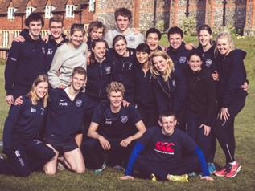
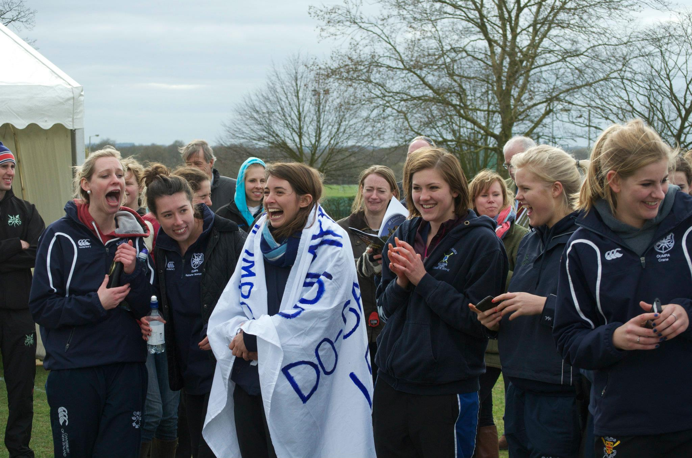

Welcome event: 8.30pm at Vincent's Club
Come and meet the team and enjoy a few drinks in the exclusive Vincent's Club.
Dress code: shirt & tie for gents, smart attire for ladies
Welcome
 We are the Oxford University Modern Pentathlon Association (OUMPA). We train in Oxford's first-class facilities located at Iffley Road and compete in a range of matches and competitions from College to National level. Past members have gone on to the GB team and even to Olympic success.
We depend upon a mixture of outstanding, experienced sportsmen and total novices to fill our Blues teams. This has ensured an open and welcoming atmosphere in all that we do. It has also resulted in 17 consecutive Varsity victories over Cambridge.
If you're interested in trying an exciting new sport, why not find out more and give pentathlon a go?
What is Pentathlon?
 Championed by Baron Pierre de Coubertin, the founder of the modern Olympic Games, Modern Pentathlon has its origins in a 19th-century legend. The sport celebrated 100 years as an Olympic Sport at London 2012.
The story goes that a young cavalry officer was sent on horseback to deliver a message. To complete his mission, he had to ride, fence, shoot, swim and run – the five challenges that face competitors in Modern Pentathlon today.
The first element is fencing, in which competitors are required to fence against every other athlete. This is followed by swimming (200m freestyle) and riding (jumping an unknown horse over a 12-obstacle course). Athletes are given points for each element of the competition. Finally, there is the Combined Event, in which athletes are required to shoot five targets within 70 seconds and run 1,000m (three times over). The winner of the competition is the athlete with the greatest overall score.
For more detailed rules and regulations, see Pentathlon GB or the official rulebook.
Training
Most of our training is student run and there are no compulsory early morning starts! Whether you're a serious athlete out to win competitions or you're more keen on the socials and the crewdates, we'd love to hear from you.
You don't have to be proficient at all 5 sports to try pentathlon. We have members with backgrounds in swimming, the Pony Club, athletics, and many other sports. We'll provide training sessions to build your skills and fitness before the annual Varsity Match.
| Sun | Mon | Tues | Wed | Thu | Fri | Sat |
| Shoot and Run 8.30-11am Cricket Schools |
Rest :) | Shoot and Run 7.30-9 AM Cricket Schools |
Shoot and Run 7.30-9.00 AM Cricket Schools |
Hill Session 11am-12pm South parks |
||
| Swim 4.30-6pm Iffley Pool |
Beginners Fencing 3.30-5.15pm Cricket Schools |
Run and Shoot 5-7 PM Cricket Schools |
Run with OUCCC 1-2 PM Uni Parks |
Fencing - Whole Club 5.30-8 PM Cricket Schools |
||
| Advanced Fencing 7.30-10 PM Cricket Schools |
Swim 9-10 PM Iffley Pool |
Swim 9-10 PM Iffley Pool |
(Schedule correct for Hilary Term 2014.) You can also view the always up-to-date Google Calendar which you can subscribe to.
Competitions
- Novice Varsity (9th November): every year, novices from Oxford and Cambridge compete in this very enjoyable pentathlon. It's a no-pressure introduction to the thrills of competing, without the spills of the ride. Cambridge are hosting this year, so we have some "spectacular" nightlife to look forward to!
- Old Blues
- BUCS 14th-15th March 2014 - full results
- Varsity Match (4th-5th April 2014) - full results
- Novice Varsity: 5th Week Michelmas - results spreadsheet and Facebook photos
- Cuppers (inter college competition): 7th Week Michelmas - results spreadsheet
- Old Blues: Mid-Hilary - results spreadsheet
- BUCS: 8th-9th March 2013 - full results and photos on Facebook
- Varsity Match: 5th-6th April 2013 - Facebook event
Stash
We have some dashing OUMPA apparel from Nike that can be personalised with your name or initials, see ousportshop.com for more details.
In addition, there are dark blue swimming hats, club-coloured ties and bow ties available to buy from our treasurer. The ladies and gentlemens' teams also traditionally procure an exclusive item of 'novelty stash' for the 18 athletes that compete against Cambridge.
Documents
Constitution, Code of Conduct, Minutes of 2013 AGM, Minutes of the 2014 AGM.